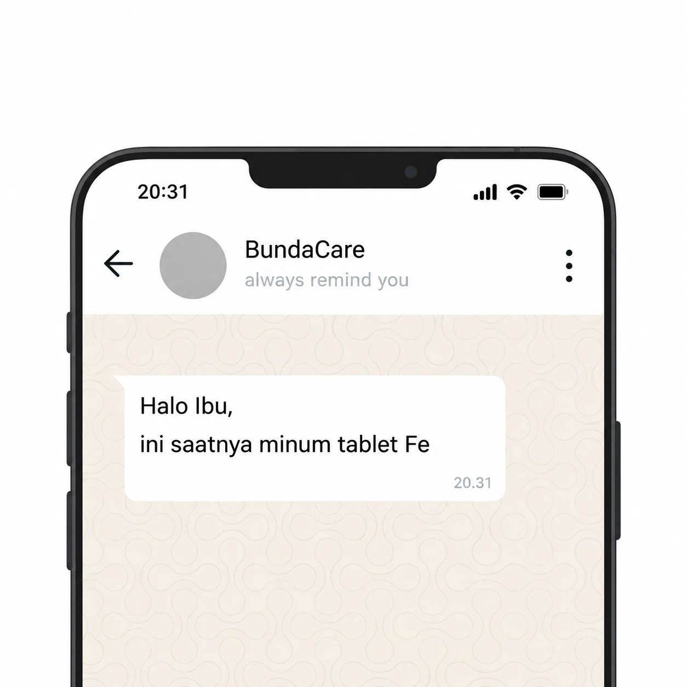
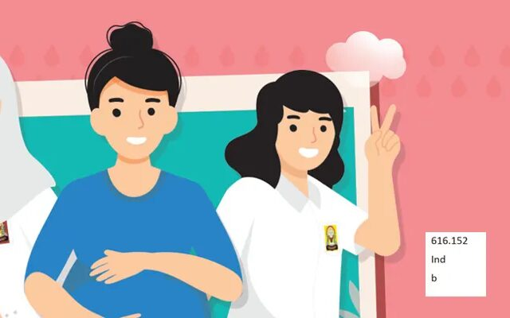

Tablet tambah darah tiap hari, diingatkan lewat WhatsApp.
Pengingat tablet tambah darah harian lewat WhatsApp, pada jam yang Ibu pilih.
Ikut pengingat
Dari website ke WhatsApp, tanpa pendataan lewat chat.
-
01
Isi data
Nama, nomor WhatsApp, dan jam pengingat yang Ibu inginkan.
-
02
Verifikasi nomor
Kirim satu pesan WhatsApp dari nomor yang didaftarkan.
-
03
Tunggu persetujuan
Pengingat aktif setelah pengelola menyetujui pendaftaran.
Ikut pengingat WhatsApp.
Isi nama, nomor WhatsApp, dan jam pengingat. Pengingat aktif setelah diverifikasi dan disetujui.
Lanjutkan verifikasi nomor
Data diterima, tetapi pengingat belum aktif. Buka WhatsApp dan kirim pesan yang sudah disiapkan dari nomor yang tadi didaftarkan.
Buka pesan verifikasiTautan berisi kode sekali pakai. Jangan dibagikan. Pesan terkirim setelah ibu menekan Kirim.
Sesudah mengirim pesan, periksa status di sini.
Baca saat perlu.
Ringkasan bersumber dari materi Kementerian Kesehatan, ditulis singkat dan apa adanya.
Dosis dan cara minum agar zat besi terserap optimal.
Baca ↗
Anemia pada ibu hamilPenyebab, gejala, dan cara mencegah anemia saat hamil.
Baca ↗ Gizi seimbang ibu hamilMenu seimbang untuk kebutuhan ibu dan janin.
Baca ↗ Tanda-tanda persalinanKenali tanda persalinan dan tanda bahaya kehamilan.
Baca ↗ Kunjungan masa nifasJadwal empat kali pemeriksaan ibu dan bayi setelah lahir.
Baca ↗ Menyusui dan ASI eksklusifASI eksklusif enam bulan dan cara menyusui yang benar.
Baca ↗